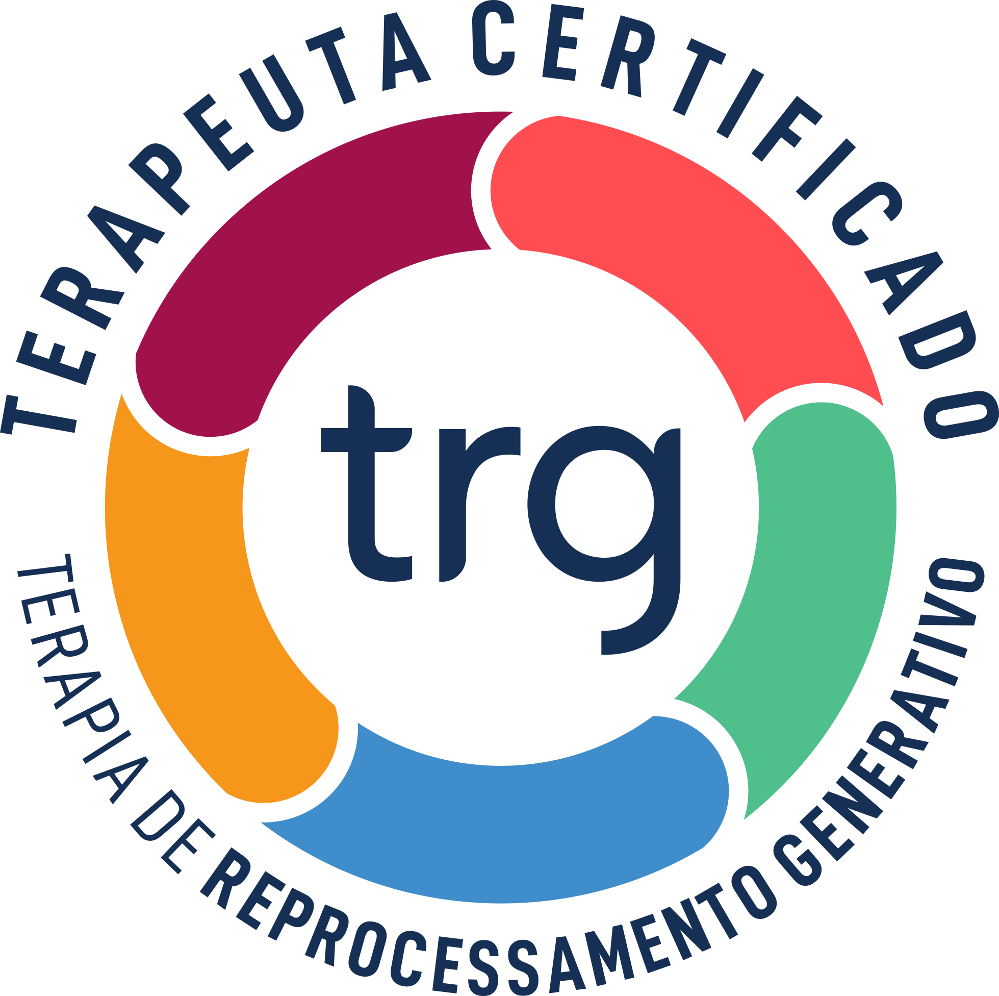

Henriette Marie Tournillon
Psicoterapeuta
Áreas de Atendimento
-Ansiedade
-Depressão
-Medos
-Síndrome do Pânico
-Fobias
-Traumas
-Dependência Emocional
-Doenças Psicossomáticas
-Estresse Pós-Traumático
Sobre a Técnica
A técnica aplicada na Terapia de Reprocessamento Generativo (TRG) permite buscar no inconsciente a raiz de todo sofrimento emocional vivenciado no presente. Depressão, fobias, ansiedade e tantas outras manifestações têm a sua origem nas experiências dolorosas do passado, distante e/ou recente. Com a TRG é possível ressignificar o passado e enxergar um futuro cheio de possibilidades.